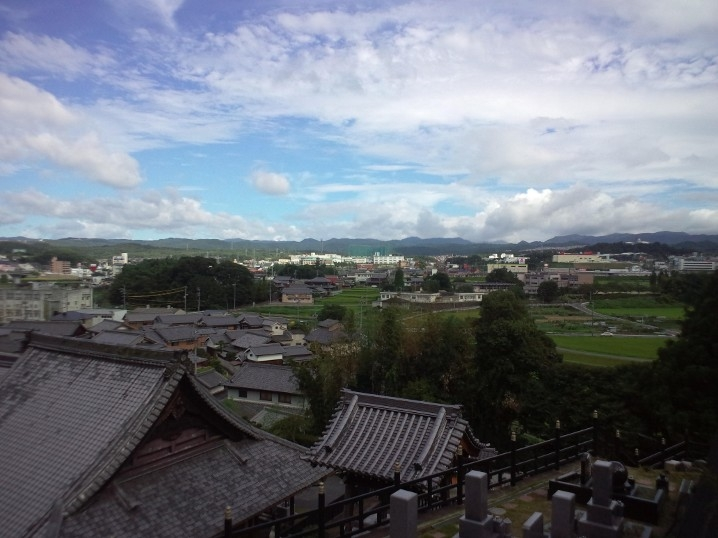
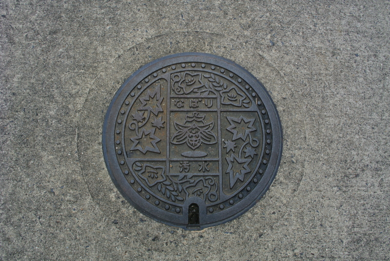
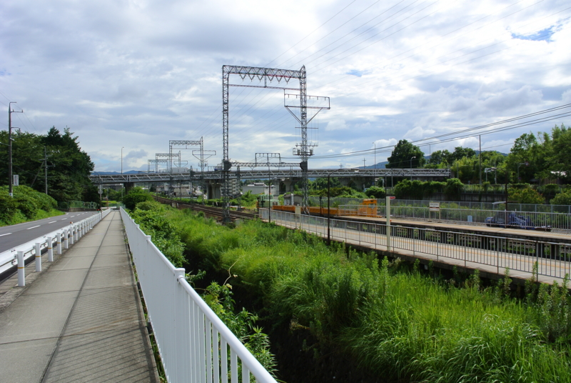
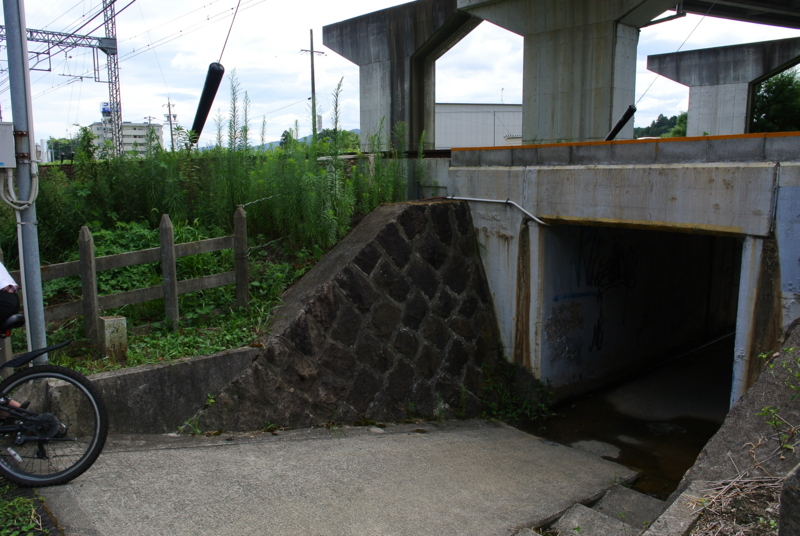
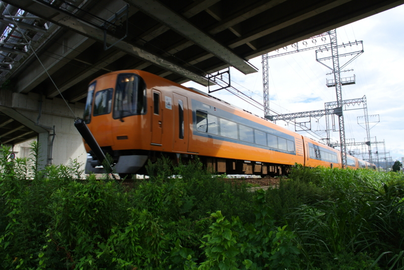
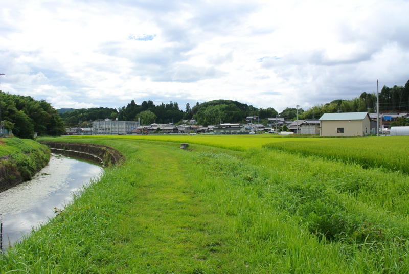
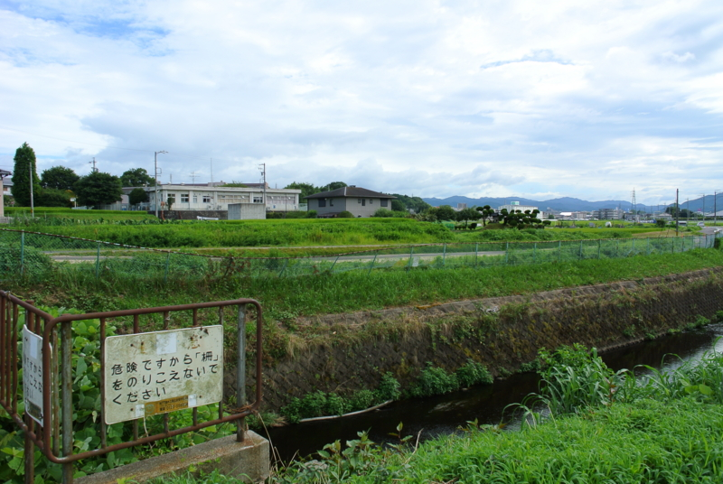
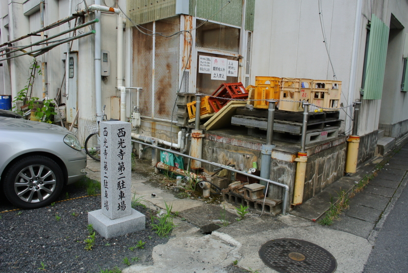
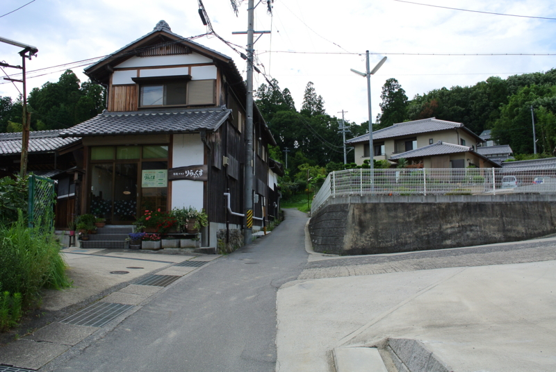
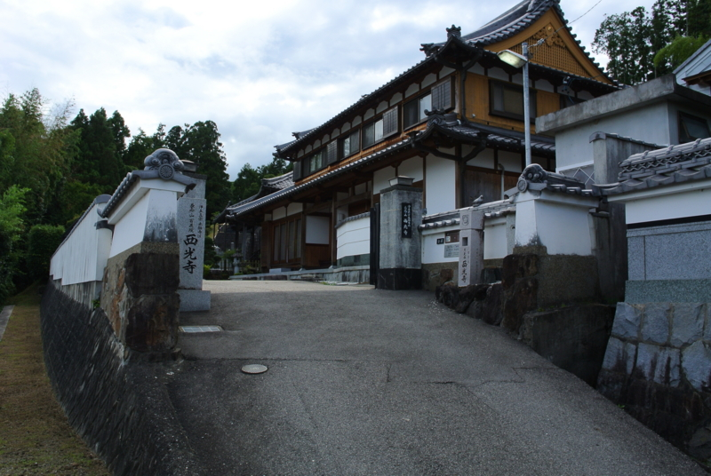

1年2ヶ月ぶりの墓参り（観光ガイドと道案内つき）
公開日：

祖母の様子をみにいった（3人の祖母。 - だるろぐ）あとは、伊賀・名張までお墓参りに行った。今調べてみたところ、2011年4月29日以来らしい。一年以上放置していたわけで、多少申し訳ない気持ちになる。うちのお墓は景色がよくて、自分が通っていた小学校も、弟妹が通っていた保育所も、近鉄電車も、市役所も一望できる。家族はみんな東京に出てきているので、お墓をそちらへ移そうという話もあるのだけれど、個人的にはたまにここに帰ってくるのは結構楽しみなことでもあり、いろいろ理屈を並べて反対している。
そもそも名張って？

名張という街は初瀬街道に面したいわゆる宿場町で、万葉の時代から存在する。壬申の乱の頃に、大海人皇子が美濃へ逃げる途中、隠（なばり）という地を経由したと史書にはあるそうな。とはいえ、基本的に歴史のスポットが当てられたことはあまりなく、郷土の自慢は赤目四十八滝、観阿弥、忍者、江戸川乱歩ぐらいなものだろうか。最近で言えば、U-23日本代表のMF山口蛍の出身地であるらしい*1。
けれど、一番の有名はなんといっても「名張毒ぶどう酒事件」なのが市民にとっては苦々しいところ。「あれは正確に言うと“名張”じゃない」などという市民もいるぐらいだ*2。
ちょっと変わっているのはメディインフラが案外充実していて、日本でいち早くケーブルTVが整備されていたこと。2000年のころには10Mbpsの定額制ネット接続サービスも行われていた。ADSLすらもあまり普及していない頃だったので、その当時から「ブロードバンド」が楽しめたのはちょっとした自慢だった。アナログ時代は関西・名古屋両方の TV 番組が見れたし、インスタントラーメンは西・東の両方の味が買えた*3。あと、最近のことなのであまり知らないのだけれど、ご当地ヒーローがやたらいるのも特徴らしい。
そんなこんなだけれど、最近は人口も減少傾向でおそらく約8万人程度。かつては大阪のベッドタウンとして住宅地開発が流行ってたけれど、今はむしろ再開発された旧市街あたりの方が居心地がいいかもしれない。
だるやなぎ家代々のお墓のあるお寺まで歩く

うちのお墓は、西光寺というお寺にある。近鉄桔梗が丘の駅からは15分から20分程度のところだろうか。駅のそばにある近鉄百貨店でお酒と仏花を買って、そのまま線路脇をてけてけ歩いていくのがいつものやり方。

途中、線路をくぐる。調子に乗ったガキがたまにノーブレーキで飛び出してくるから、注意な。ちなみに、ここらでは自転車にのるときはヘルメットをかぶるように指導されているはず。

この上を近鉄特急が通過すると、ちょっとした迫力。新小岩なんかで飛び込み自殺するぐらいなら、こっちのほうがダイナミックに死ねると思う。

トンネルを越えると、田んぼが広がっている。あたりが青い匂いで充満している。トラクターや軽トラックがたまに通るので、足元の雑草はそんなに背丈がなく、芝生みたいにふかふか。隣に流れるのは、一級河川・シャックリ川だ。ちなみに、「一級河川」というのは河川法に基づく分類であり、川のデカさは関係ない。このままずっと手繰っていけば、名張川・淀川につながり、そのまま大阪湾に注ぎ込む。このシャックリ川に沿って、遠くに見える日本酒の酒蔵を目標に歩く。

シャックリ川にかかる橋を渡る。うしろにみえるのは、小学校と保育所。遠目には田んぼの真ん中に浮いているように見える。ここが、ぼくの通っていた蔵持小学校。こじんまりとしているが、カブトムシもザリガニもとれるし、図工の竹細工につかう竹にも不自由しないのでなかなかよいところだ。
県道（？）ほにゃらら号線（名張街道）を渡る蔵持の交差点。ここ近辺では最大級の規模を誇る、信号機つきの交差点である。蔵持の名前の由来は、たぶん酒蔵がいっぱいあってお金持ちということだろう。ぼくの小さい頃まではまだ実際にお酒を作っていた。この周りには「倉田」さんがやたら多く、同級生にもいた。

しかし、それも昔の話。いまは西光寺の侵略をもろに受け、ただの駐車場になっている。

奥の山道を越えるのが、毎日の通学路だった。この坂はかなり急なので、よくみんなでじゃんけんをして、負けた奴はみんなのランドセルを担いで登るという罰ゲームをやったものだった。
ここで左に折れれば、お寺に続く坂道。昔はここに公民館とぼっとん便所があって、格好のかくれんぼ場。最後に鬼だった奴は、便所に首を突っ込み、後ろから石を落としてその“おつり”を避けるという、これまた恐怖の罰ゲームがある。無論、よけられずにクソが直撃した不幸な奴は、3日ぐらい誰も近寄ってくれなくなる。わしはその罰ゲームを受けたことがなかったが、田んぼで走っていて埋めてあった糞ツボにはまったことはある。

ようやくゴール！ ガキの頃はぜんぜん平気だったのに、いまだとちょっとしんどい。まぁ、家族みんなが墓を東京に移そうぜというのもわかる気はする。うちの墓は、このお寺の墓地の中でも一番上のほうだし、水を汲んで上がるだけでも結構大変だ。
けれど、やっぱりここがいいと思う。東京と違って落ち着くし、故人のことも含めて、いろいろ昔のことを思い出すのにはいいところだ。ここの跡継ぎ住職はたしか弟2号か妹の同級生なので、親父が死んだら葬式代をまけてもらえるかもしれないしネ。